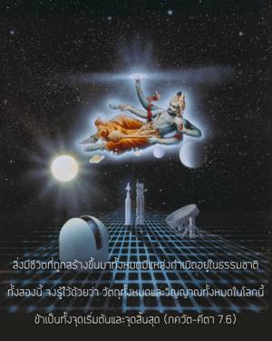
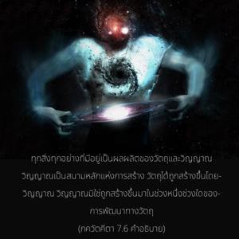

สิ่งมีชีวิตที่ถูกสร้างขึ้นมาทั้งหมดมีแหล่งกำเนิดอยู่ในธรรมชาติทั้งสองนี้ จงรู้ไว้ด้วยว่า วัตถุทั้งหมดและวิญญาณทั้งหมดในโลกนี้ ข้าเป็นทั้งจุดเริ่มต้นและจุดสิ้นสุด


ทุกสิ่งทุกอย่างที่มีอยู่เป็นผลผลิตของวัตถุและวิญญาณ วิญญาณเป็นสนามหลักแห่งการสร้าง วัตถุได้ถูกสร้างขึ้นโดยวิญญาณ วิญญาณมิใช่ถูกสร้างขึ้นมาในช่วงหนึ่งช่วงใดของการพัฒนาทางวัตถุ แต่โลกวัตถุนี้ปรากฏขึ้นจากฐานของพลังงานวิญญาณเท่านั้น ร่างกายวัตถุนี้เจริญเติบโตขึ้นเพราะว่าวิญญาณอยู่ภายในวัตถุ ทารกค่อยๆเจริญเติบโตขึ้นมาเป็นเด็กและเป็นหนุ่มสาวเพราะว่าพลังงานเบื้องสูงหรือดวงวิญญาณอยู่ในร่างกาย ในทำนองเดียวกันปรากฏการณ์ในจักรวาลทั้งหมดแห่งจักรวาลอันยิ่งใหญ่ไพศาลพัฒนาขึ้นเนื่องจากอภิวิญญาณ หรือพระวิษณุทรงประทับอยู่ ฉะนั้นวิญญาณและวัตถุรวมกันเข้าปรากฏมาเป็นรูปลักษณ์จักรวาลอันมหึมานี้โดยพื้นฐานทั้งสองเป็นพลังงานขององค์ภควานฺ และด้วยเหตุนี้พระองค์จึงทรงเป็นแหล่งกำเนิดเดิมของทุกสิ่งทุกอย่าง ละอองอณูขององค์ภควานฺ เช่น สิ่งมีชีวิตอาจเป็นแหล่งกำเนิดของตึกระฟ้าสูงใหญ่ โรงงานใหญ่ๆ หรือแม้แต่เมืองใหญ่ๆ แต่ไม่สามารถเป็นแหล่งกำเนิดของจักรวาลอันมหึมาได้แหล่งกำเนิดของจักรวาลอันยิ่งใหญ่เป็นดวงวิญญาณผู้ยิ่งใหญ่หรืออภิวิญญาณ และองค์กฺฤษฺณบุคลิกภาพสูงสุดทรงเป็นแหล่งกำเนิดของทั้งอภิวิญญาณและอนุวิญญาณ ฉะนั้นองค์กฺฤษฺณทรงเป็นแหล่งกำเนิดเดิมแท้ของแหล่งกำเนิดทั้งปวง ใน กฐ อุปนิษทฺ (2.2.13) ได้ยืนยันไว้ดังนี้ นิโตฺย นิตฺยานำ เจตนศฺ เจตนานามฺ